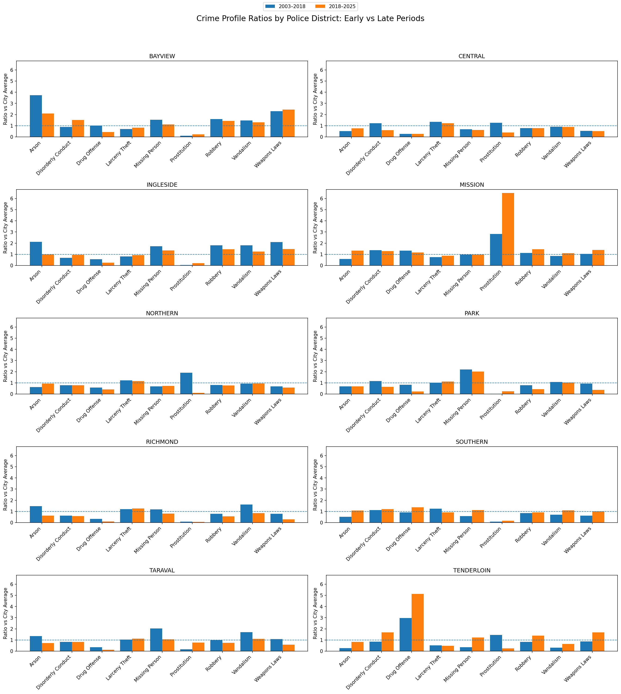

One city does not mean one crime pattern
Citywide summaries can make crime look like a single trend, but San Francisco is made up of districts with very different patterns. A useful crime story therefore has to move beyond totals and ask what changes depending on place, geography, and time of day.
This data story uses data provided by the city of San Francisco from 2003 to 2025 to show how crime patterns differ across police districts, where they concentrate geographically, and how they shift across the hours of the day. The story focuses on 9 crime categories: Arson, Disorderly Conduct, Drug Offenses, Larceny Theft, Missing Person, Prostitution, Robbery, Vandalism and Weapons Laws.
Crime profiles differ sharply across police districts
San Francisco looks very different depending on which district you're standing in. Rather than just counting which district has the most crime overall, this figure compares each district's crime profile to the city average, revealing that districts don't just differ in how much crime occurs, but in what kind. Mission stands out for prostitution, Tenderloin for drug offenses, and Bayview shows a notably high arson ratio that has declined over time. The comparison across two time periods (2003 - 2018 and 2018 - 2025) also shows that these profiles aren't static but rather, they shift, likely reflecting a mix of policy changes, enforcement priorities, and demographic change. Tenderloin's dominance in drug offenses is well documented, according to the San Francisco Chronicle, the district accounted for around 60% of the city's drug offenses from 2018 onward. Mission's prostitution pattern similarly reflects a long-established street sex-work corridor in the area.

Mapping crime reveals where patterns concentrate
The map adds a geographic dimension to what Figure 1 suggested numerically. Drug offenses aren't spread evenly across the city, they cluster in the center. Tenderloin stands far above every other district, with Mission being the only other district showing a notably elevated ratio, though still well below Tenderloin's levels. The outskirt districts like Richmond, Sunset, and others on the city's edges, consistently fall below the city average. This kind of geographic concentration suggests that drug offense patterns in San Francisco are strongly tied to specific neighborhoods rather than being a citywide phenomenon.
Crime also changes over the course of the day
The final figure adds a time dimension to the story. Knowing that Tenderloin dominates drug offenses and Mission stands out for prostitution is useful, but when these crimes occur adds another layer. The data shows that different crime types follow very different daily rhythms. Drug offenses peak in the afternoon and early evening, while prostitution is most common in the evening and through the night. Not all crimes are this predictable though and some categories are spread more evenly across the day. These patterns matter because they suggest that crime in San Francisco isn't just about place, it's also about time.
Use the interactive chart below to explore how each crime category plays out across the 24-hour cycle.
A more local view changes the story
San Francisco's crime data tells a more interesting story when you stop looking at the city as a whole and start looking at its parts. Tenderloin's drug offense problem, Mission's prostitution, and the shifting time patterns across crime categories all point to the same conclusion: place and time matter enormously when interpreting crime data.
But it's worth being honest about what this data actually shows. These are recorded crimes, not a complete picture of crime that happened. When drug offenses are heavily concentrated in Tenderloin, that reflects where enforcement is focused as much as where drug activity actually occurs. Heavily policed neighborhoods will always appear more prominently in the data than under-policed ones. Similarly, changes between the two time periods, 2003 to 2018 and 2018 to 2025, could reflect real shifts in behavior, but could equally reflect changes in how crimes were classified or how resources were allocated across districts.
That doesn't make the patterns meaningless, but rather, it makes them worth reading carefully. The goal of this story is simply to show that where and when you look at crime in San Francisco changes what you see. A single citywide number can't capture that, but a closer look at the districts gives a much more interesting picture.